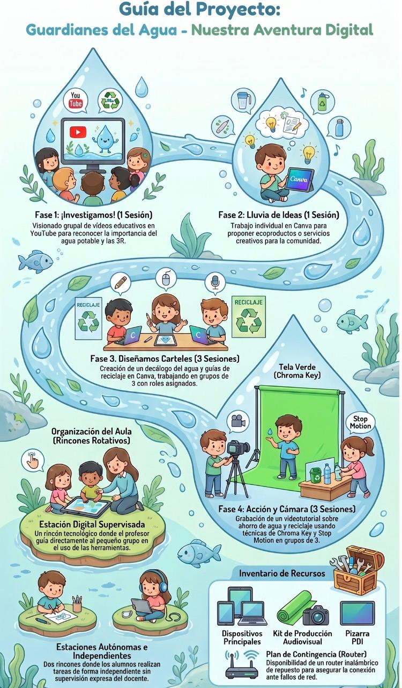

Línea temporal
Aquí podemos ver la linea temporal del proyecto de las 3 R: conciencia ambiental.

Aquí podemos ver la linea temporal del proyecto de las 3 R: conciencia ambiental.

Obra publicada con Licencia Creative Commons Reconocimiento Compartir igual 4.0